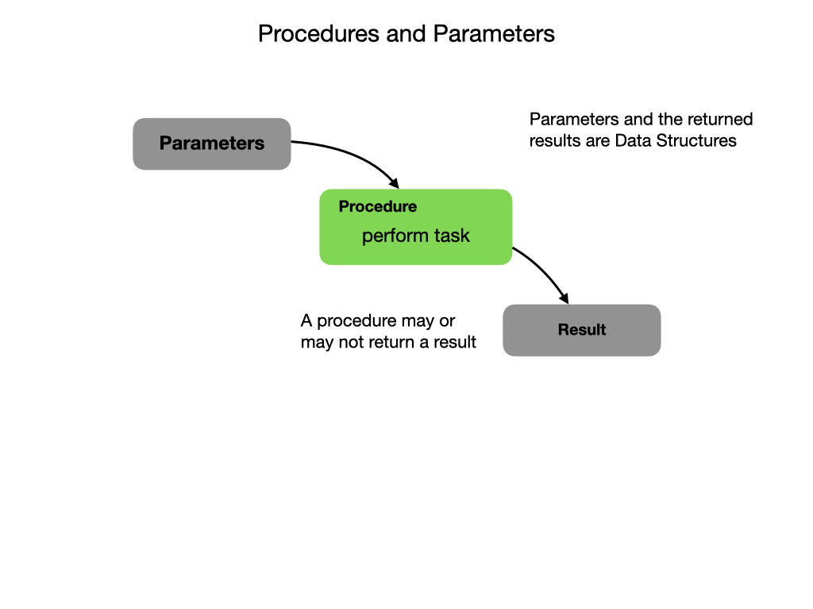

Procedures
In most programs there are tasks that you will need to perform multiple times. This is done using Procedures which are blocks of code that perform specific tasks whenever they are called. An example of a task that a mobile robot may perform is “Drive forward 10 meters”. If a procedure is part of an Object then it’s called a Method. Don’t let this confuse you, a Method is simply a Procedure in the context of Object Oriented Programming. We’ll look at Objects in the next section.
At a basic level a procedure just compares data, so the first thing you’ll learn are the comparison and logical operators. You’ll either be comparing the data to a constant value or between two or more streams of data that the program is inputting. The comparisons are invoked in an IF-THEN-ELSE structure or within some kind of loop.
You may notice that the task of driving forward 10 meters is very specific. What if you wanted to go forward 5 meters, or drive backwards. In order to make the procedure more useful it can be parameterized. That way, you can move whatever distance you want either forward or backward. The ability to pass in Parameters, or data, is a key feature of Procedures that make them so useful.
Not only can you pass data into a Procedure, you can also get data out. Once the data has been processed you can pass back a result of that processing. This is done using a return statement in the code. Procedures that return data are sometimes referred to as Functions.
References
W3 Schools - Java Methods
W3 Schools - Java Method Parameters.
Crash Course Computer Science - Statements & Functions